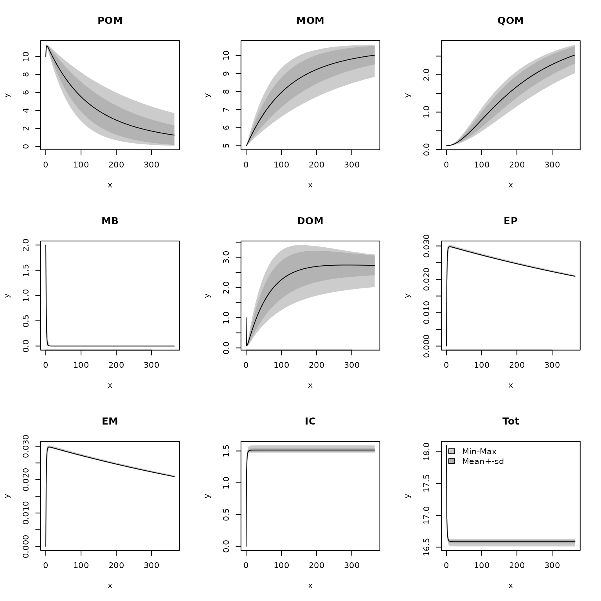
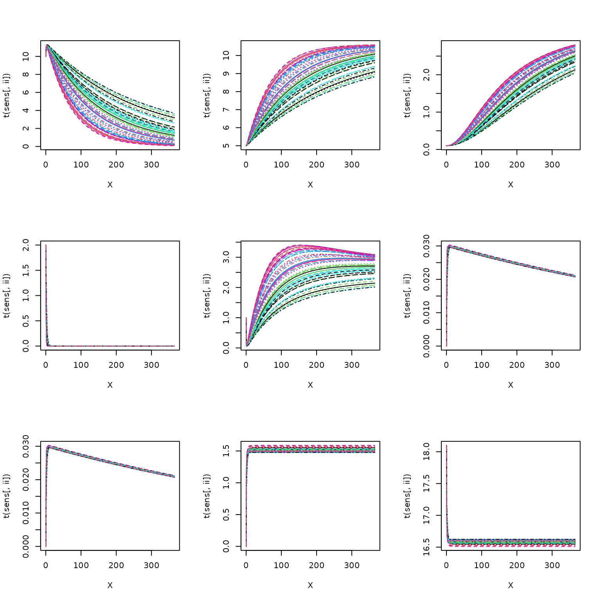
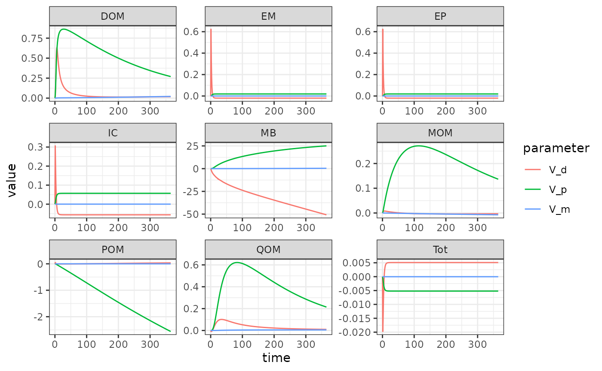
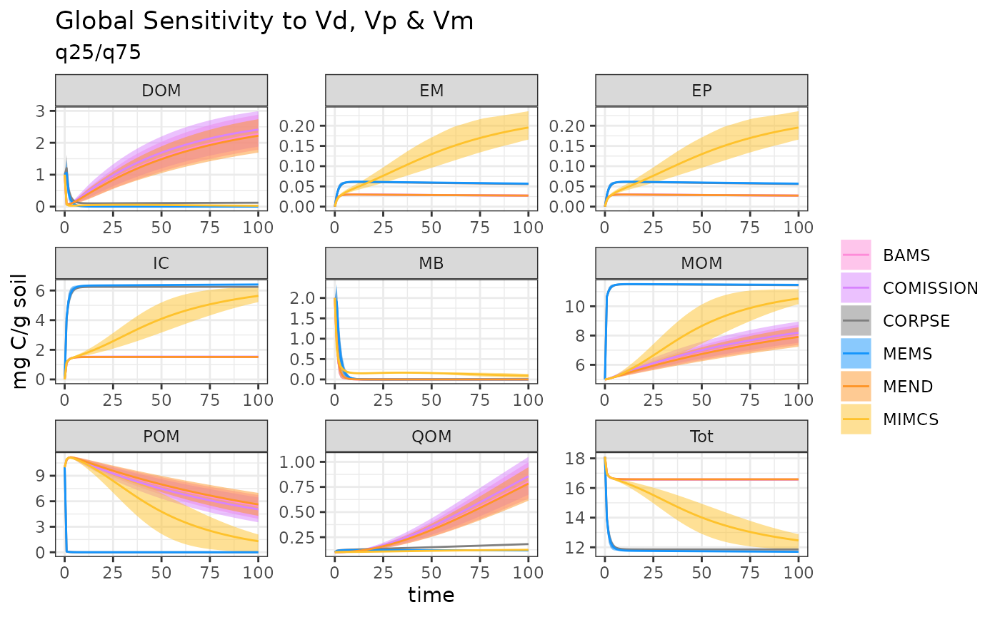
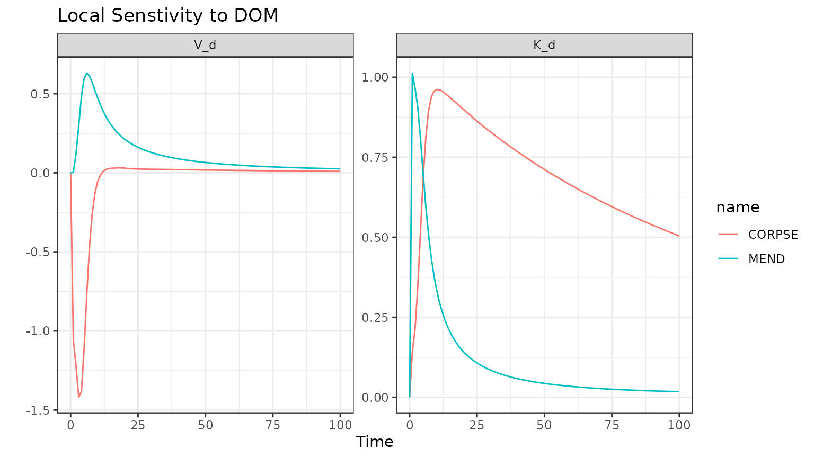

Senstivity-Analysis
sens.RmdThe objective of this example is demonstrate how to easily conduct a
sensitivity analysis and visualize results using
memc_sensrange, memc_sensfunc, and
format_sensout. This is merely a demonstration of package
capabilities more so than a rigorous analysis. The first section will
demonstrate how to use the memc function related to sensitivity
analyses. The second section will demonstrate how alternative model
configurations affect sensitivity results.
Define the paaramter ranges
Set up a data frame defining the parameter ranges to sample from. Any model parameters or initial pool sizes can be used, in this example we will explore the effects of maximum specific decomposition constants for POM, DOM, and MOM have on the model behvaior. Users should use more informed parameter ranges from the literature, here we sample a range of broad range defined as ± 50% of the parameter value.
pars <- c("V_d" = 3.0e+00,"V_p" = 1.4e+01,"V_m" = 2.5e-01)
prange <- data.frame(pars = pars,
min = pars * 0.50,
max = pars * 1.50)
memc_sensrange
The memc_sensrange function is MEMC
specific wrapper of FME::sensRange.
memc_sensrange allows users to easily run a
MEMC model configuration with parameter combinations drawn
from a predefined distribution, ultimately generating an uncertainty
envelope around model results.
Description of inputs to MEMC function memc_sensrange
are as follows:
-
config: a memc model configuration object, either one of the pre-built configurations listed inmodel_configsor created usingconfigure_model. - t: vector of the time steps to run the model at
- pars: vector of the parameters that will be varied
- parRange: data frame of the min/max parameter values
- dist: str for the distribution according to which the parameters will be sampled from, options “unif” (uniformly random samples), “norm”, (normally distributed random samples), “latin” (latin hypercube distribution), and “grid” (parameters arranged on a grid).
- n: integer number of sampled parameter combinations to run the model with.
MENDsens_out <- memc_sensrange(config = MEND_model,
t = seq(0, 365),
pars = pars,
parRange = prange,
dist = "latin",
n = 50)Take a quick look at the results.
head(summary(MENDsens_out))
#> x Mean Sd Min Max q05 q25 q50
#> POM0 0 10.00000 0.00000000 10.00000 10.00000 10.00000 10.00000 10.00000
#> POM1 1 10.88130 0.19121024 10.52621 11.18186 10.63065 10.73288 10.84517
#> POM2 2 11.13221 0.10846719 10.85231 11.29095 10.96597 11.06153 11.13622
#> POM3 3 11.17937 0.05364326 11.03055 11.27141 11.10502 11.14626 11.17191
#> POM4 4 11.15279 0.08608763 10.99297 11.29878 11.01397 11.07737 11.17540
#> POM5 5 11.09585 0.13247012 10.85746 11.28838 10.88914 10.96864 11.13708
#> q75 q95
#> POM0 10.00000 10.00000
#> POM1 11.06260 11.16004
#> POM2 11.23566 11.27918
#> POM3 11.22246 11.25520
#> POM4 11.21973 11.27720
#> POM5 11.20250 11.26828Quickly visualize results using R’s base plot function,
this is a quick way to look at results however for more user control
over the figures we recommend using ggplot2.

plot(MENDsens_out)
memc_sensfun
Given a memc model configuration, estimate the local effect of certain parameters on selected sensitivity variables by calculating a matrix of so-called sensitivity functions based on FME::sensFun.
Description of inputs to MEMC function memc_sensfun are
as follows:
- config: a memc model configuration object, either one of the pre-built configurations listed in model_configs or created using configure_model
- t: numeric vector of the time steps to run the model at
- pars: vector specifying the model parameters to test
sens_out <- memc_sensfunc(config = MEND_model,
t = seq(0, 365),
pars = c("V_d" = 3.0e+00,"V_p" = 1.4e+01,"V_m" = 2.5e-01))Take a look at the results.
head(sens_out)
#> x var V_d V_p V_m
#> 1 0 POM 0.000000000 0.000000000 0.000000e+00
#> 2 1 POM 0.048743867 -0.002236204 2.290941e-07
#> 3 2 POM 0.033570845 -0.006926320 1.230290e-06
#> 4 3 POM 0.015965606 -0.012568561 2.722232e-06
#> 5 4 POM 0.004513539 -0.018673815 4.204668e-06
#> 6 5 POM -0.001963303 -0.025066675 5.390584e-06
format_sensout
To visualize the results from memc_sensfun use our
helper function, format_sensout, that formats the object
returned by into a data frame that can be used by
ggplot.
ggplot(data = format_sensout(sens_out)) +
geom_line(aes(time, value, color = parameter)) +
facet_wrap("variable", scales = "free")
Global Parameter Sensivity Model Comparison
prange <- data.frame(pars = c("V_d" = 3.0e+00,"V_p" = 1.4e+01,"V_m" = 2.5e-01),
min = pars * 0.50,
max = pars * 1.50)Use the same parameter ranges with each of the different MEMC model configurations.
time <- seq(0, 100)
MENDsens_out <- memc_sensrange(config = MEND_model,
t = time,
pars = pars,
parRange = prange,
dist = "latin",
n = 50)
COMISSIONsens_out <- memc_sensrange(config = COMISSION_model,
t = time,
pars = pars,
parRange = prange,
dist = "latin",
n = 50)
CORPSEsens_out <- memc_sensrange(config = CORPSE_model,
t = time,
pars = pars,
parRange = prange,
dist = "latin",
n = 50)
MEMSens_out <- memc_sensrange(config = MEMS_model,
t = time,
pars = pars,
parRange = prange,
dist = "latin",
n = 50)
BAMSens_out <- memc_sensrange(config = BAMS_model,
t = time,
pars = pars,
parRange = prange,
dist = "latin",
n = 50)
MIMCSens_out <- memc_sensrange(config = MIMCS_model,
t = time,
pars = pars,
parRange = prange,
dist = "latin",
n = 50)Prepare all of the data into a single data frame for plotting.
out <- rbind(cbind(format_sensout(MENDsens_out), name = "MEND"),
cbind(format_sensout(COMISSIONsens_out), name = "COMISSION"),
cbind(format_sensout(CORPSEsens_out), name = "CORPSE"),
cbind(format_sensout(MEMSens_out), name = "MEMS"),
cbind(format_sensout(BAMSens_out), name = "BAMS"),
cbind(format_sensout(MIMCSens_out), name = "MIMCS"))
ggplot(data = out) +
geom_ribbon(aes(time, ymin = q25, ymax = q75, fill = name), alpha = 0.5) +
geom_line(aes(time, Mean, color = name)) +
facet_wrap("variable", scales = "free") +
labs(y = "mg C/g soil",
title = "Global Sensitivity to Vd, Vp & Vm",
subtitle = "q25/q75") +
theme(legend.title = element_blank()) +
scale_fill_manual(values = MEMC::colorMEMCPalette()) +
scale_color_manual(values = MEMC::colorMEMCPalette())
Comparison of Local Parameter Sensivity
Use the memc_sensfun to compare the sensitivity of the
DOM pool is to V_d and K_d, two parameters that affect the MB uptake of
DOM for MEND and CORPSE.
time <- 0:100
MENDsens_out <- memc_sensfunc(config = MEND_model,
t = time,
pars = c("V_d" = 3.0e+00,"K_d" = 0.250),
sensvar = "DOM")
CORPSEsens_out <- memc_sensfunc(config = CORPSE_model,
t = time,
pars = c("V_d" = 3.0e+00,"K_d" = 0.250),
sensvar = "DOM")Format output and visualize the results.
out <- rbind(cbind(format_sensout(CORPSEsens_out), name = "CORPSE"),
cbind(format_sensout(MENDsens_out), name = "MEND"))
ggplot(data = out) +
geom_line(aes(time, value, color = name)) +
facet_wrap("parameter", scales = "free") +
labs(title = "Local Senstivity to DOM",
x = "Time", y = "" ) 